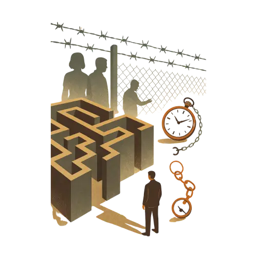

Asociación Española de Víctimas de los Testigos de Jehová y la JW.ORG
No estás solo
Si estás dudando, si acabas de salir o si necesitas hablar con alguien que entiende el proceso, empieza por aquí. Te orientamos sin juicio y con apoyo real.
Encuentra apoyo sin perderte
Cada ruta responde a una necesidad concreta: salir, recibir apoyo, entender derechos o encontrar documentación fiable.
Salir sin hacerlo a ciegas
Contenido ordenado como acompañamiento, con pasos, riesgos y recursos para recuperar autonomía.
Ver guía Apoyo humanoHablar con alguien que entiende
Contacto orientado a escucha, derivación y soporte, sin transformar la primera visita en burocracia.
Contactar Derechos y pruebasDocumentar, denunciar, proteger
Acceso a documentos, demandas, sentencias y materiales de transparencia con jerarquía visual.
Ver documentos
Salir es difícil. Perderte en la web no debería serlo.
La guía gana protagonismo porque es una de las páginas más importantes para quien llega con dudas reales.
Visibilidad pública que también genera confianza
RTVE da voz a las víctimas del ostracismo
Una entrada clara para entender el impacto público del testimonio y acceder a la noticia completa.
Conversaciones pendientes
La presencia en medios ayuda a que el daño deje de vivirse en silencio.
Sobrevivir al paraíso
El documental amplía la conversación y acerca estas experiencias a nuevas audiencias.
Si necesitas apoyo, la siguiente acción tiene que estar clara.
Contacto directo, guía y comunidad para que nadie tenga que atravesar este proceso sin apoyo.